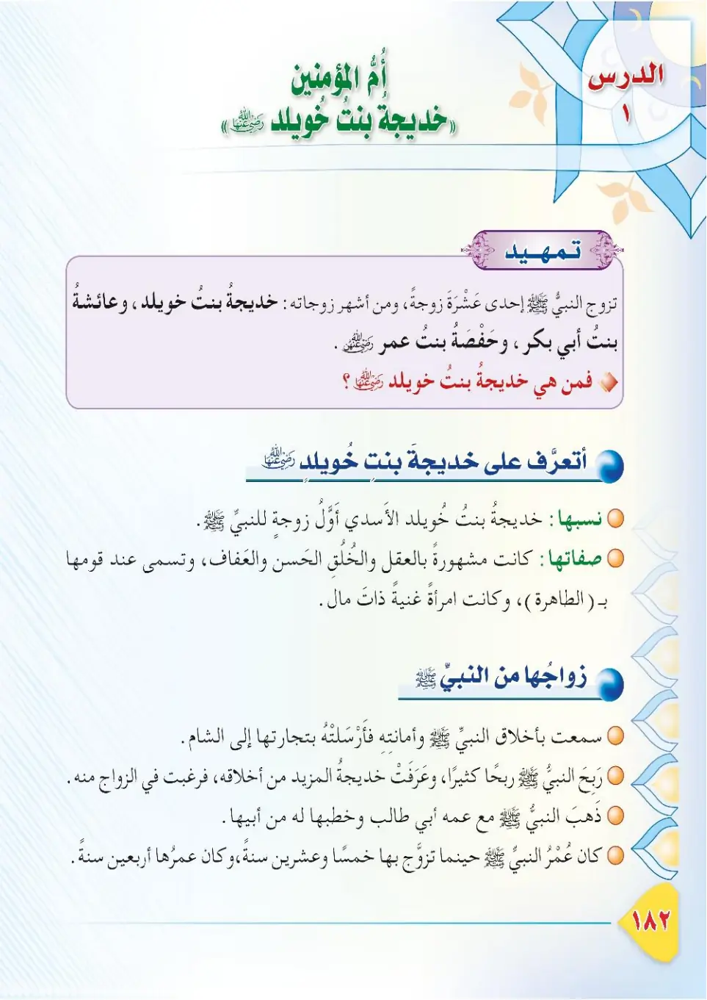
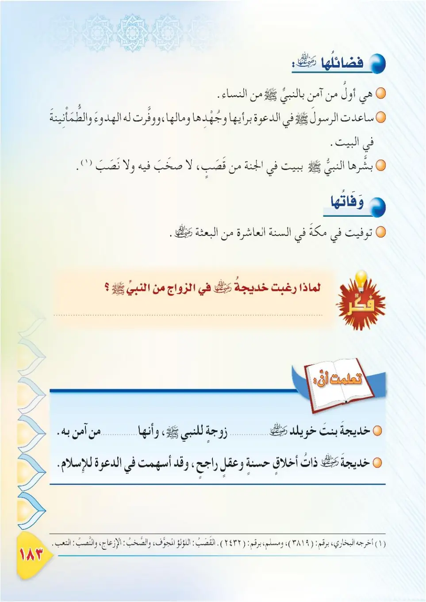
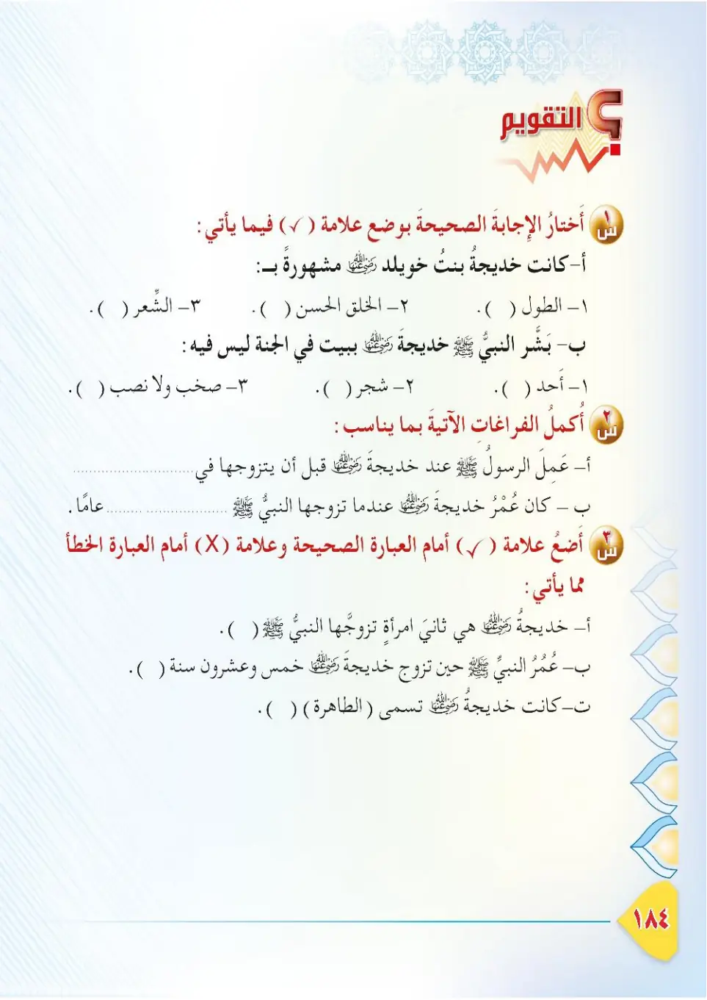

Stage 3·المرحلة الثالثة📖 Unit 6
سِيرَةُ أُمِّ الْمُؤْمِنِينَ خَدِيجَةَ رَضِيَ اللهُ عَنْهَا The Wife of the Prophet ﷺ: Khadijah, may Allah be pleased with her
From the Textbookpp. 183–185



أولُ زوجاتِ النبيِّ ﷺ وأحَبُّهنَّ إليه هي أمُّ المؤمنينَ خديجةُ بنتُ خويلدٍ، رضي الله عنها؛ فهي أوَّلُ من صدَّقَه وآمنَ به، وآزَرَتْه وساندَتْه في دعوتِه للهِ تعالى. فلنتعرَّفْ — في هذا الدرسِ — على سيرتِها.
Awwalu zawjati an-nabiyyi ﷺ wa ahabbuhunna ilayhi hiya Umm al-Mu'minine Khadijatu bintu Khuwaylid, radiyallahu 'anha; fa-hiya awwalu man saddaqahu wa amana bihi, wa a'zarat-hu wa sanadat-hu fi da'watihi lillahi ta'ala. Falnata'arraf — fi hadha ad-dars — 'ala siratiha.
The first wife of the Prophet ﷺ and the most beloved to him was Umm al-Mu'minin Khadijah bint Khuwaylid, may Allah be pleased with her. She was the first to believe him and support him in his call to Allah the Exalted. In this lesson, let us learn her story.
நபி ﷺ அவர்களின் முதல் மனைவியும், அவர்களுக்கு மிகவும் அன்பானவரும் உம்முல் முஃமினீன் கதீஜா இப்னத் குவைலித் (ரலி) ஆவார். அவரை நம்பி, இறைவழியில் ஆதரித்து, உறுதுணையாக நின்றவர். இந்தப் பாடத்தில் அவர்களின் வாழ்க்கை வரலாற்றை அறிவோம்.
كانت خديجةُ بنتُ خويلدٍ من أشرفِ نساءِ قريشٍ نسبًا ومالًا، شريفةً كريمةً عاقلةً، تتاجرُ للناسِ في مكَّةَ، حتى أضحتْ أَغنى نساءِ قريشٍ، فسَمَّوْها «الْكَرِيمَةَ».
Kanat Khadijatu bintu Khuwaylid min ashrafi nisa'i Qurayshin nasaban wa malan, sharifatan karimatan 'aqilatan, tatajaru lin-nasi fi Makkah, hatta adhat agna nisa'i Quraysh, fasam mawha «al-Karimata».
Khadijah bint Khuwaylid was one of the noblest women of Quraysh in lineage and wealth, honourable, generous, and wise. She traded for the people in Makkah until she became the wealthiest woman of Quraysh, so they called her "al-Karimah" (the Generous One).
கதீஜா இப்னத் குவைலித் குறைஷின் மிக உன்னதப் பெண்களில் ஒருவர்; பரம்பரை, செல்வம், கண்ணியம், விவேகம் உடையவர். மக்காவில் மக்களுக்காக வணிகம் செய்து குறைஷிலேயே மிகச் செல்வந்தப் பெண்ணானார்; "அல்-கரீமா" (கொடையாளர்) என்று அழைக்கப்பட்டார்.
تزوَّجَها النبيُّ ﷺ وهو ابنُ خمسٍ وعشرينَ سنةً، وهي ابنةُ أربعينَ سنةً، فكانت زوجًا صالحةً وفيةً، أحسَنَتْ إليه وصبرَتْ معه، فلم يتزوَّجْ عليها حتى توفيتْ.
Tazawwajaha an-nabiyyu ﷺ wa huwa ibnu khamsin wa 'ishrina sanah, wa hiya ibnato arba'ina sanah, fakanat zawjan salihatan wafiyyatan, ahsanat ilayhi wa sabarat ma'ahu, falam yatazawwaj 'alayha hatta tawaffiyat.
The Prophet ﷺ married her when he was twenty-five years old and she was forty, and she was a righteous, loyal wife who treated him well and was patient with him. He did not marry anyone else until she passed away.
நபி ﷺ 25 வயதில் அவரை மணந்தார்கள்; அப்போது அவருக்கு 40 வயது. நல்ல, நம்பிக்கையான மனைவியாக இருந்து அவருக்கு உதவினார்; சகிப்புடன் இருந்தார். அவர் இறக்கும் வரை நபி வேறு திருமணம் செய்யவில்லை.
عن أنسِ بنِ مالكٍ رضي الله عنه قال: قال النبيُّ ﷺ: «هذه خديجةُ جاءتْكم بإناءٍ فيه طعامٌ، وإنَّه قد أتاني أنها قد بُشِّرتْ ببيتٍ في الجنَّةِ من قَصَبٍ لا صخبَ فيه ولا نصبَ». أخرجه البخاري.
'An Anasi ibn Malikin radiyallahu 'anhu qal: qal an-nabiyyu ﷺ: «Hazihi Khadijatu ja'atkum bi-ina'in fihi ta'amun, wa innahu qad atani annaha qad bushshirat bi-baytin fi al-jannati min qasabin la sakhba fihi wa la nasaba». Akhrajahu al-Bukhari.
Anas ibn Malik, may Allah be pleased with him, said: The Prophet ﷺ said: "This is Khadijah; she has come to you with a vessel of food, and I have been told that she has been given glad tidings of a house in Paradise built of reeds, with no clamour and no toil." Narrated by Al-Bukhari.
அனஸ் (ரலி) கூறினார்கள்: "இந்தக் கதீஜா; ஒரு பாத்திரத்தில் உணவு கொண்டு வந்துள்ளார். சொர்க்கத்தில் சத்தங்களும் சோர்வும் இல்லாத ஒரு மண்வீடு அவருக்கு நற்செய்தியாக அளிக்கப்பட்டது எனக் கூறப்பட்டது." (புகாரி)
توفيتْ خديجةُ رضي الله عنها قبلَ الهجرةِ بثلاثِ سنينَ عامَ الحزنِ، وكان النبيُّ ﷺ يحبُّها ويُحسِنُ إلى صديقاتِها بعدَ وفاتِها، ويُكثِرُ من ذكرِها؛ فما أجملَ الوفاءَ!
Tawaffiyat Khadijatu radiyallahu 'anha qabla al-hijrati bi-thalathi sinin 'amma al-huzni, wa kana an-nabiyyu ﷺ yuhibbuha wa yuhsinu ila sadiqatiha ba'da wafatiha, wa yukthiru min dhikriha; fama ajmala al-wafa!
Khadijah, may Allah be pleased with her, passed away three years before the Hijrah in the Year of Sorrow. The Prophet ﷺ loved her greatly, and after her death he continued to honour her friends and frequently mentioned her. How beautiful is loyalty!
கதீஜா (ரலி) ஹிஜ்ராவுக்கு மூன்று ஆண்டுகளுக்கு முன், சோக ஆண்டில் இறந்தார். நபி ﷺ அவரை மிக நேசித்தார்கள்; இறப்புக்குப் பிறகும் அவரின் தோழிகளை கௌரவித்தார்கள், அவரை அடிக்கடி நினைவுகூர்ந்தார்கள். விசுவாசம் எவ்வளவு அழகானது!